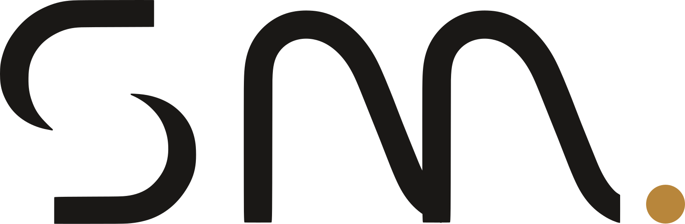
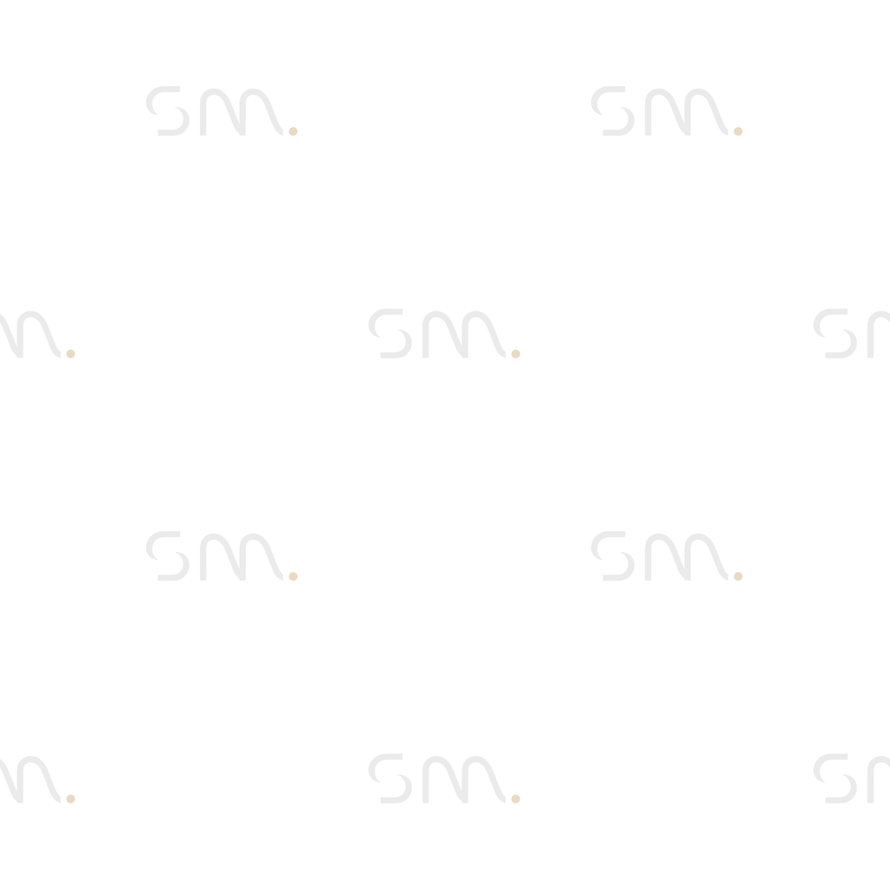

Chapter11
Signature mark and monogram.
The personal layer and the seal. The signature is Sanzeed’s hand; the monogram — SM., its M made from two of the wordmark’s N — is the mark at cufflink scale.
- 11.1The signature mark
- 11.2The monogram
Sanzeed Mirza · Experiential Design ConsultantBrand Guidelines · Version 1.0 · November 2026
11.1 · The signature mark
The personal layer.
Hand-lettered “Sanzeed.” vectorised from the original artwork (potrace, 300 dpi, editable Béziers). Five colours, 02_LOGO_SYSTEM/Signature.
- Personal, not institutional. Letters, thank-you cards, sign-offs, the end of a case study. Never on invoices, proposals, signage or in place of the wordmark.
- Minimum 32 mm in print, 160 px on screen. Below that the flourish closes up.
- Keep the flourish underline. Never recolour parts of it, never separate the dot.
- Vector only. The traced SVG/PDF/EPS from 02_LOGO_SYSTEM/Signature; the original raster signature is retired.
- Sign-off form. “— Sanzeed Mirza” under quotes; the signature mark alone reads “Sanzeed.”

11.2 · The monogram
SM. — the seal.
Sanzeed Mirza’s initials drawn from the wordmark itself: the refined S, an M built from two of the wordmark’s N (the second N’s stem standing on the first N’s foot), and the point as the full stop. Seven colourways like every other variant.

- Seals and embossing. Blind deboss or foil on card stock, wax-seal scale.
- ID-card reverse. 16 mm, with the QR code and contact lines (09_PRINT_STATIONERY/ID_Card).
- Pattern. The monogram-repeat tile at ≤ 12 % opacity (05_GRAPHIC_ASSETS/Patterns).
- Never as the primary mark. The monogram does not replace the symbol on avatars or favicons; it is the mark where “SM.” is read as initials.

